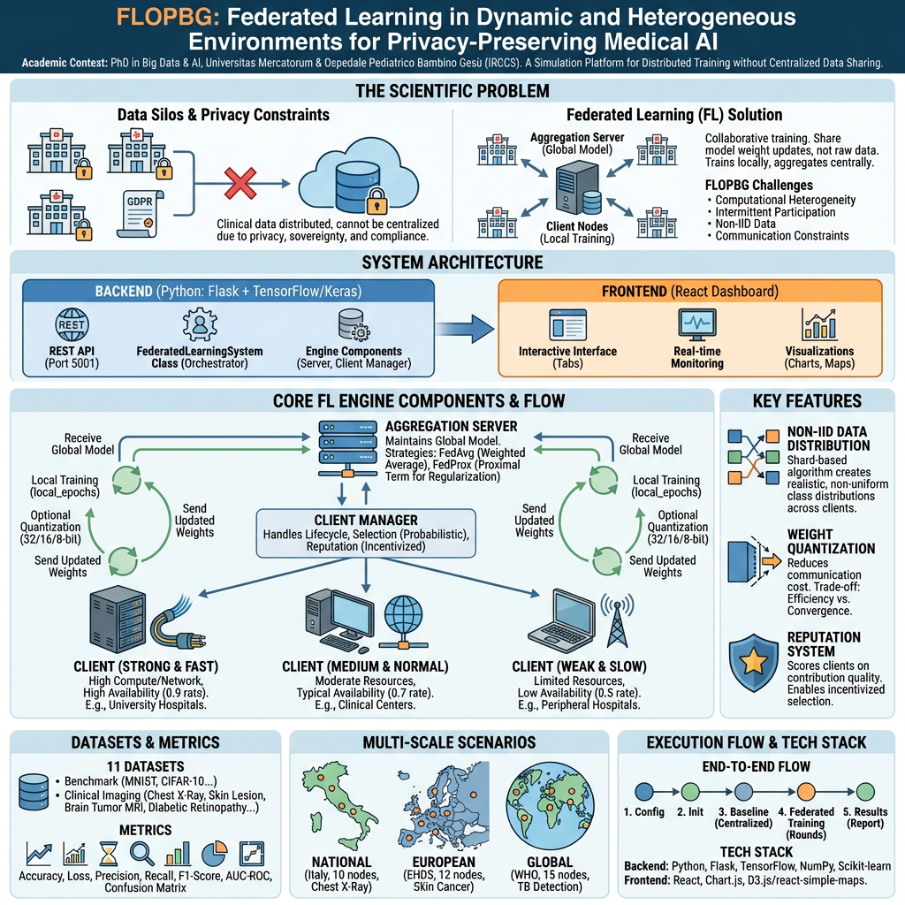
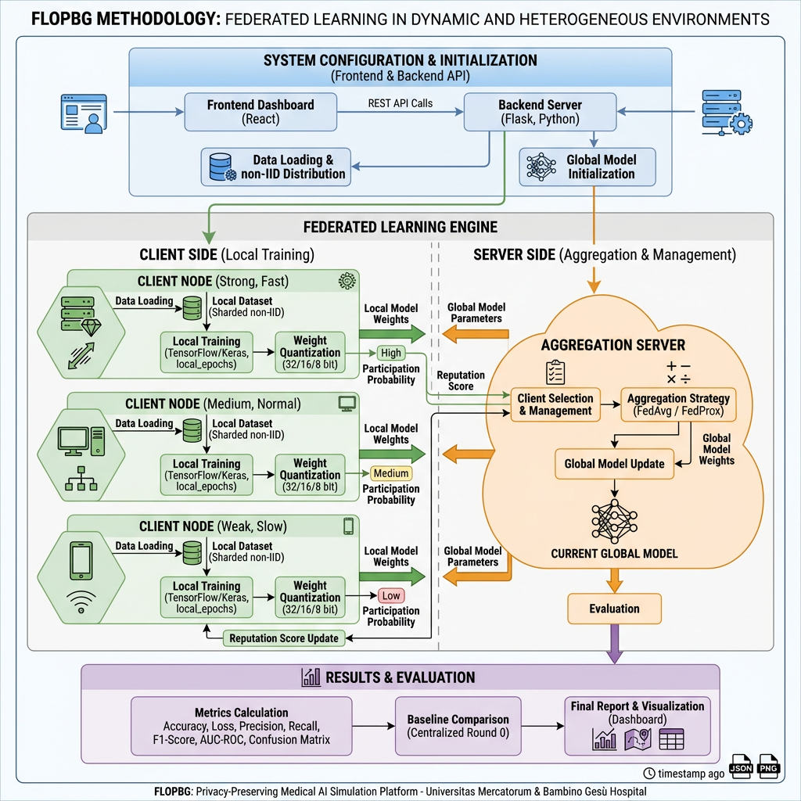

FLOPBG nasce dalla collaborazione scientifica tra l'Ospedale Pediatrico Bambino Gesù (IRCCS), il più grande centro di ricerca e cura pediatrica in Europa, e l'Università delle Camere di Commercio Italiane (Universitas Mercatorum), nell'ambito del Dottorato di Ricerca in Big Data and Artificial Intelligence.
Il progetto affronta una delle sfide più rilevanti dell'AI in sanità: come addestrare modelli di deep learning per la diagnosi medica per immagini quando i dati clinici sono distribuiti tra molteplici istituzioni e non possono essere condivisi centralmente per vincoli di privacy (GDPR), sovranità dei dati e regolamentazioni sanitarie nazionali.
La piattaforma è un sistema full-stack di simulazione e sperimentazione per il Federated Learning, progettato per valutare e confrontare strategie di addestramento distribuito rispetto ad approcci centralizzati, con particolare focus sull'imaging medico diagnostico — dalla radiologia pediatrica alla dermatologia oncologica, dalla tubercolosi alla retinopatia diabetica.
Il Federated Learning (FL) rappresenta un cambio di paradigma nell'addestramento distribuito di modelli di machine learning, consentendo a molteplici istituzioni di collaborare senza condividere i dati grezzi. Questa piattaforma di simulazione affronta le sfide reali del FL in ambito clinico: eterogeneità computazionale tra i nodi partecipanti (ospedali con risorse diverse), dinamismo nella partecipazione (disponibilità variabile dei client), distribuzione non-IID dei dati (casistiche cliniche diverse per sede), e vincoli di comunicazione (banda limitata, latenza variabile). Il framework implementa e confronta algoritmi FedAvg e FedProx con meccanismi avanzati di quantizzazione dei pesi, sistema di reputazione dei client, e supporto per scenari multi-scala (nazionale, europeo, globale), con particolare applicazione all'imaging medico diagnostico.


Implementazione completa di Federated Averaging e FedProx con proximal term configurabile (μ) per gestire l'eterogeneità statistica tra i client.
Simulazione realistica di nodi con potenza computazionale e velocità di rete variabili (strong, medium, weak), riflettendo le disparità infrastrutturali reali.
Modellazione della partecipazione intermittente dei client (fast, normal, slow) con tassi di partecipazione configurabili per simulare scenari realistici.
Supporto per distribuzioni non identicamente distribuite dei dati tra i nodi, condizione tipica degli scenari clinici multi-istituzionali.
Compressione dei pesi del modello (32, 16, 8 bit) per ridurre i costi di comunicazione, cruciale per nodi con connettività limitata.
Sistema di reputazione basato sulle prestazioni dei client per ponderare i contributi durante l'aggregazione, migliorando la robustezza del modello globale.
Rete di ospedali di montagna italiani per la detection di polmonite pediatrica. Simulazione di nodi con risorse limitate e connettività variabile.
Classificazione di lesioni cutanee distribuita su 12 centri in Europa nel framework EHDS. Eterogeneità tra grandi ospedali universitari e cliniche specializzate.
Rilevamento della tubercolosi coordinato dall'OMS su 15 centri in 6 continenti. Massima eterogeneità computazionale e partecipazione intermittente.